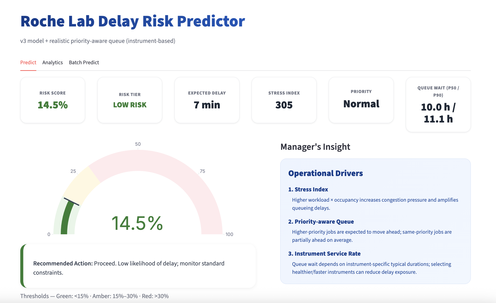

Roche Lab Delay Risk Predictor
AI-powered predictive system built for Roche Pharma's Lab Operations. Forecasts experiment delays using 350K synthetic lab records across workflow, telemetry, and reagent data. A calibrated Gradient Boosting classifier achieves 86.3% AUC, identifying lab congestion and reagent batch quality as dominant delay drivers. Deployed as a Streamlit risk dashboard with what-if scenarios and a Tableau analytics layer.
